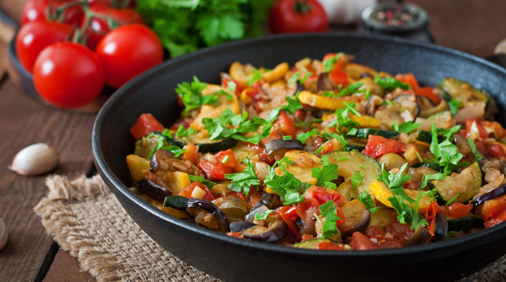

En el maravilloso universo de la gastronomía y la lingüística, descubrimos un terreno fértil donde las recetas se entrelazan con las conversaciones, creando una experiencia única y enriquecedora. Este artículo explora la conexión intrínseca entre la cocina y el aprendizaje de idiomas, invitándonos a saborear no solo deliciosos platillos, sino también la riqueza de la comunicación humana.
Cocinando en un mundo de palabras: Imagina estar rodeado de aromas embriagadores, ingredientes frescos y el sonido sutil de idiomas extranjeros. Esto es lo que sucede en nuestras clases, donde la cocina se convierte en el lienzo para aprender y practicar nuevos idiomas. Cada cucharada es una oportunidad para sumergirse en una nueva cultura, mientras que cada palabra pronunciada es como un ingrediente que da sabor a la experiencia.
Lecciones que se saborean: Las clases combinadas de idiomas y cocina no solo ofrecen la oportunidad de adquirir nuevas habilidades culinarias, sino también de mejorar la fluidez lingüística. Desde describir pasos de recetas hasta debatir sobre preferencias alimenticias, cada intercambio verbal se convierte en una lección práctica y deliciosa.
Platos que cuentan historias:Cada receta es una historia en sí misma. Desde las tradicionales baguettes francesas hasta los exquisitos curries indios, cada plato lleva consigo la narrativa de una región y su gente. Al cocinar estas recetas, no solo aprendemos el arte de la preparación, sino que también absorbemos las historias que los ingredientes cuentan.

Foto: Freepik
Conversaciones que aderezan el aprendizaje:En la cocina, las conversaciones fluyen tan naturalmente como las mezclas de sabores. Ya sea discutiendo técnicas de corte o compartiendo anécdotas sobre la primera vez que probamos un plato específico, las conversaciones se convierten en el ingrediente secreto que enriquece nuestro conocimiento lingüístico y cultural.
Una banquete de experiencias:Al final de cada clase, nos encontramos no solo con platos exquisitos sino también con una mesa llena de experiencias compartidas. Las risas compartidas mientras se prepara un soufflé o las discusiones animadas sobre la pronunciación correcta de una palabra crean una conexión humana única y memorable.
¡Un brindis por el aprendizaje multisensorial! Al fusionar el arte de la cocina con el fascinante mundo de los idiomas, creamos un festín multisensorial para mente y paladar. Cada clase se convierte en un viaje que nutre tanto el cuerpo como la mente, recordándonos que el aprendizaje puede ser tan delicioso como educativo. Así que levantemos nuestras cucharas y brindemos por un viaje continuo de recetas y conversaciones que nos enriquecen a cada bocado y palabra pronunciada.
¡Salud! 🌐🍲🗣️